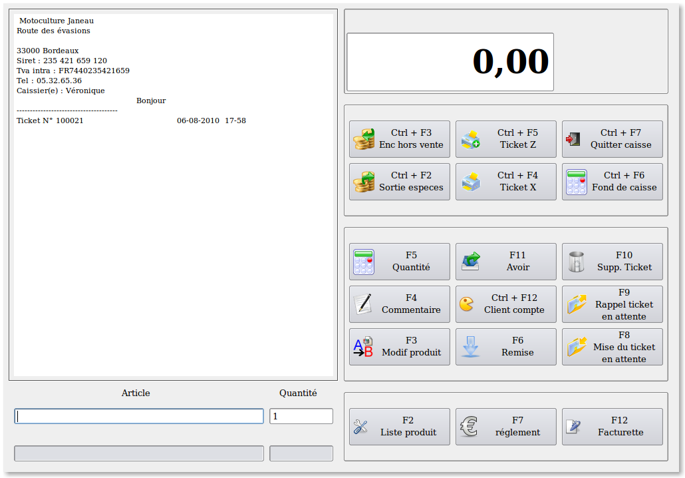

Ecran de saisie de la caisse.

L'écran de saisie de la caisse est composé de
plusieurs parties regroupant pour chacune d'entre elles les opérations
de même nature..
A gauche on a le ticket, ce
qui permet de visualiser l'ensemble des opérations effectuées sur le
ticket en cours.
Sous le ticket on a la partie servant à la saisie des produits et des autres
opérations appelées par les touches de fonction, comme par exemple la
saisie des commentaires (F4), l'appel des quantités (F5) lors d'une
lecture optique, l'appel d'un client en compte (CTRL + F12), la mise en
attente d'un ticket (F8) etc...
En haut à droite on a une zone dans laquelle
s'affiche le montant du ticket puis juste en dessous un panel qui
regroupe les opérations pouvant être efféctuées en dehors des ventes.
Le deuxième panel à droite regroupe les différentes
opérations susceptibles d'être faite lors d'une saisie de ticket.
Enfin, le dernier panel en bas à droite offre la
possibilité d'appeler la fenêtre de recherche des produits ou soit
d'appeler la fenêtre de saisie des règlements ou celle de l'impression
d'une facturette.
NB.
Toutes les opérations de caisse peuvent être appelées de deux manières.
Par le clavier grace aux touches de fonction ou avec la souris par un
clic sur les boutons idoines.
Quelques principes.
Les numéros de ticket sont générés de la façon
suivante. Le premier chiffre à gauche est le numéro de la caisse puis
les 6 chiffres suivant représentent le numéro du ticket. Les numéros de
ticket ne sont jamais réinitialisés.
Dans le cas ou la gestion de l'administarteur a été
activée, certaines opérations nécessitent la saisie d'un mot de passe
(Voyez la documentation sur le paramétrage).
Pour supprimer une ligne, on la sélectionne et on fait "Suppr".
On ne peut pas modifier une ligne
sous Laurux.pos. Si besoin, on la supprime et on la resaisit.
La touche de fonction F5 a deux fonctions. Soit
l'appel d'une quantité lors d'une lecture optique, c'est à dire que le
programme s'arretera sur la zone quantité au lieu de valider
automatiquement le produit avec une quantité égale à 1, soit l'appel de
la calculette lorsqu'on est sur la zone quantité. Cette calculette peut
permettre par exemple le calcul des surfaces pour les produits vendus
au metre carré.
----------------------------------------------------------------------------------------------------------------------
Retour
en haut de la page
Retour
a l'index